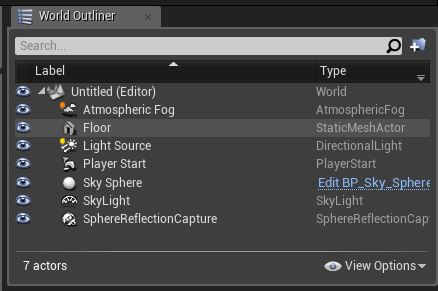

MainWindow¶
The main window contains most important settings and docks for the primary editor features.
Tab-Bar¶

Every window has a tab bar which can hold multiple views/windows. If the main window/view get closed (as tab or the containing “real” window) the project gets completely closed, also all other windows.
Viewport¶

The viewport is simply a preview of the map, where you can place and manipulate a world. Cuz we do not have SF world we can’t use it there, that means the viewport is more or less useless to us.
Tool-Bar¶

The tool-bar is a strongly simplified version of the menubar and is icon base, but its the only place where you can find the access to the Alpakit window.
The Tool-bar contains mainly shortcuts for the project settings, c++ building and source control, the rest ist mostly not useful without a map.
Outliner¶
The outliner is here again pretty useless because it simply contains the list of placed objects in the world.
Modes¶

One more useless view cause we don’t have a proper map to edit, but this would help you to place things into the world and contains a list of basic actors and edit tools for brushes, terrain and so on.
Content-Browser¶

Finally a very very useful and important view. This view is simply a file browser for all contents of your mod project and SF/UE source like C++ classes.
In the left half, you can see a tree structure based folder explorer where you can select a folder which contents get the displayed on the right-hand side half of the view.
It also has in the left upper corner or in the context menu (r-click-menu) the ability to create, import, export, delete or modify content.
You can find in the Content-Root folder all “normal” assets and the C++-Classes root folder contains all c++ classes.